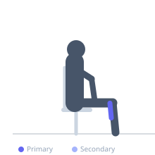
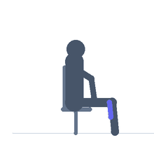

Exercise guide / Seated Calf Raise
Seated Calf Raise
The seated calf raise targets the soleus muscle specifically because the bent-knee position relaxes the gastrocnemius, removing it from the movement. The soleus is predominantly slow-twitch and responds well to higher repetitions. It is an important complement to standing calf raises for complete calf development.
Primary muscles
soleus
Secondary muscles
gastrocnemius medial
Equipment
Seated Calf Raise Machine


Starting position
- Sit on the seated calf raise machine with the pad resting on the lower thighs just above the knees. Balls of the feet on the platform edge, heels hanging off.
Setup
- Adjust the knee pad height to firmly secure the thighs. The 90-degree knee position is what specifically targets the soleus.
Steps
- Lower the heels as far as possible below the platform.
- Raise the heels as high as possible.
- Hold the peak contraction for one second, then lower under control.
Coaching cues
- Full stretch at the bottom — the soleus responds to the eccentric portion
- High reps work well here — the soleus is built for endurance
Breathing
- Exhale on the raise, inhale on the descent.
Range of motion
- Full plantar flexion at top, full dorsiflexion stretch at the bottom.
Tempo
- 3-1-3-0
Common mistakes
- Not using full range of motion
- Using a machine designed for standing raises and incorrectly calling it a seated raise
Safety
- Ensure pad is secured before releasing the safety handle
Training
- hypertrophy: 15–25 reps
- endurance: 25–40 reps
- hypertrophy: 3–4 sets
- endurance: 2–3 sets
- Rest: {'hypertrophy': 60, 'endurance': 30}